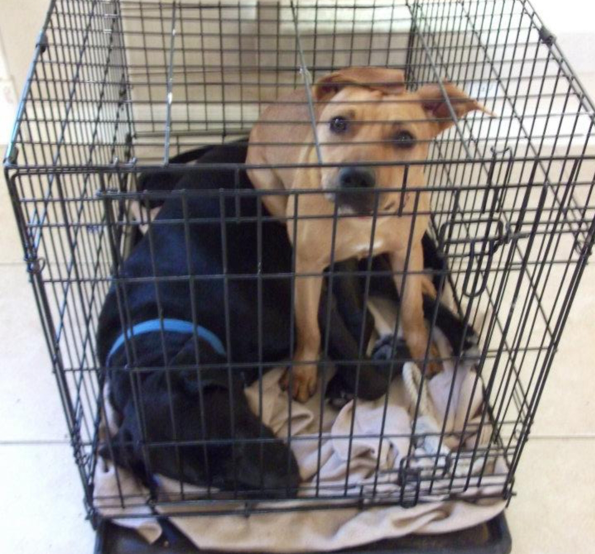
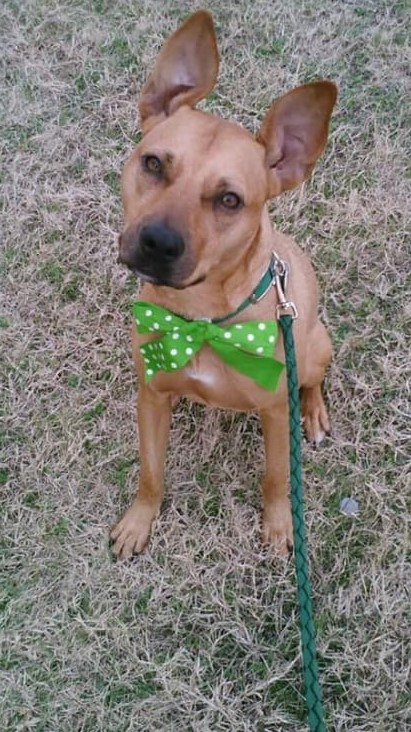
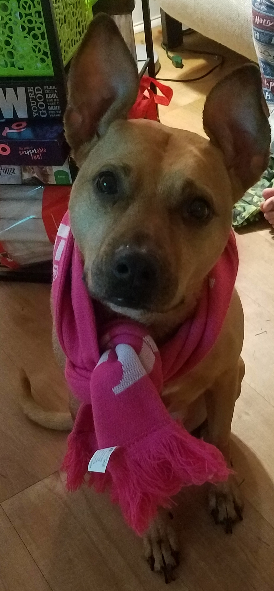

Once upon a time, in the land of 2011, there was a young puppy found roaming the streets of Houston. She was about 4 months old, and a gangly and peculiar sort of dog. Looking at her, she was more legs, ears, and wrinkles than any one person could really tell what to do with. Even still, roaming about the streets doing whatever it is puppies get up to, is a very freeing way to spend one's time, and so it was with a great stroke of unlukiness that the puppy found herself snatched up by dog catchers and whisked away to the pound.
Even though the pound was the worst type of place,
with the best kind of people, Tiny soon found herself
in a new home, with new people and dogs. Some who were
very excited that she'd come the live and stay, and
others who were decidedly less excited. But nevertheless,
she made some wonderful new friends.
There was her human, Rhema, Tiny liked her best since she
was always taking her outside (and being a puppy with a
tiny bladder meant LOTS of early wake up calls), spending
time with her, and feeding her. Her human had other human friends
that lived with them too, and they were always so hapy to pet
her, sneak her treats, or (her favorite) snuggle up with her. Best of
all, Tiny got to live with other dogs too! There was Oreo, or Douglas
O'Callihan as she was known to her more formal acquaintences, and Resse.
And so she got to know all of her new friends, and Tiny was happy.
Over the next few years, Opelusa went on many adentures.

She had sleepovers with Doug. She found her fashion sense.


But perhaps the biggest adventure she undertook was moving over 700 miles away
from home.
The first move took her to Missoui, for school. She worked hard in all of her studies and eventually graduated with honors! Tiny expeienced all of the northern seasons (she loved having a real fall and winter with snow) and eventually became pretty settled in her way of life. Not too long into her time in Missouri, however, she got the itch to live in other states. And so she followed where the wind took her! Washington, Vermont, Arizona, and Utah were where the first gusts of wind blew.